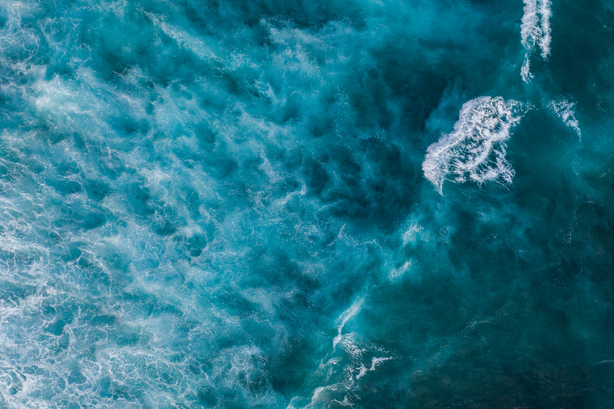

-

Yüzme!
Daha Fazla Bilgi AlYüzme kuşkusuz en sağlıklı sporlardan biri. Yüzme ile uğraşan kişiler vücut, boyun ağrısı, sırt ağrısı nedir bilmezmiş.
Yüzmede bir çok stil çeşidi bulunmaktadır. Bunlar; serbest yüzme, kelebek, kurbağalama ve sırt üstüdür.
Üç tarfı denizlerle çevrili ülkemizde yüzme bilenlerin sayısı bir hayli yüksektir. Fakat profesyonel olarak yüzücü olmak için neler gerekir?
Sorunun cevabı için:
-
Senkronize Yüzme!
Daha Fazla Bilgi AlSenkronize yüzme veya diğer adıyla su balesi, yüzme ile dans ve jimnastiğin harmanlanarak yapıldığı bir spordur. 1800'lü yılların sonunda ortaya çıkmış olmasına rağmen uzun yıllar sirk ve panayırlarda gösteri şeklinde sunuldu.
1952 yılında Uluslararası Yüzme Federasyonu tarafından tanındı. 1973'te ilk kez Senkronize Yüzme Dünya Şampiyonası yapıldı. 1984'te Olimpiyat programına dahil edildi.
Peki bu sporun incelikleri nelerdir?
Sorunun cevabı için:
-
Su Topu!
Daha Fazla Bilgi AlSutopu, 6 alan oyuncusu biri kaleci, kaleci dahil 7'si oyun içinde, yedeklerle beraber toplam 14 kişiden oluşan2 takımla 2 yarı ve 8 dakika 4 periyot süresince en fazla 25x33 metre boyutundaki havuzda yüzerek ve topu kaleye sokmaya çalışarak suda oynanan bir takım oyundur.
Peki bu sporun incelikleri nelerdir?
Sorunun cevabı için:
-
Atlama!
Daha Fazla Bilgi AlAtlama, belirli bir yükseklikten atlayıp, havada estetik hareketler yaptıktan sonra suya dimdik girmeye dayanan spor dalı. Genellikle balıklama yapılan atlayış sırasında ayrıca çeşitli jimnastik ve akrobasi hareketleri gerçekleştirilir.
Gittiğimiz havuzlarda veya denizlerdeki iskelelerde hepimiz mutlaka bir kere suya atlamışızdır.
Peki bu sporun incelikleri nelerdir?
Sorunun cevabı için:
-
Tüplü Dalış!
Daha Fazla Bilgi AlTüplü dalış, bilinen en temel tanımıyla, bir su altı aktivitesidir ve diğer dalış türlerinden ayrılan en farklı yanı, su altında nefes alabilmenizi sağlayan bağımsız bir hava kaynağı (dalış tüpü) ile yapılıyor olmasıdır.
Bu sayede, indiğiniz derinliğe bağlı olarak, su altındaki hava ihtiyacınızı belirli bir süre karşılarsınız ve yüzeye çıkmak zorunda kalmadan su altını keşfetme fırsatınız olur.
Peki bu sporun incelikleri nelerdir?
Sorunun cevabı için:
-
Serbest Dalış!
Daha Fazla Bilgi Alİnsanın inanılması güç derinliklere nefesini tutarak daldığı serbest dalış sporunun tarihi çok eskilere dayanır.
Sualtı avcılığı ile insanların geçimini sürdürmeleri amacıyla başlayan bu spor sualtı avcılığının çok ötesine geçip günümüzde limitlerini keşfetmek serbest-dalis-01isteyen bir grup serbest dalıcı tarafından ayrı bir boyut kazanmıştır.
Peki bu sporun incelikleri nelerdir?
Sorunun cevabı için:
-
Balıkçılık!
Daha Fazla Bilgi AlBalıkçılık, en dar anlamıyla denizlerde, göllerde ve akarsularda balıkların çeşitli yöntemlerle avlanmasıdır. Ama balıkçılık yalnızca balık avlanmasıyla sınırlı değildir. Midye, karides, ıstakoz, pavurya, istiridye ve ahtapotun, hatta balina gibi deniz memelilerinin avlanması da balıkçılık kapsamına girer.
Spor ve eğlence amacıyla yapılan balıkçılığa amatör balıkçılık denir. Besin gereksinimi karşılamak için yapılan balıkçılık ise ticari balıkçılık olarak adlandırılır.
Ülkemizin 3 tarafı denizlerle çevrilidir ve balık tüketimi oldukça fazladır. Peki bu sporun incelikleri nelerdir?
Sorunun cevabı için:
-
Kano!
Daha Fazla Bilgi AlBir tekne türü olan kano, düz tipli basit bir su aracıdır. İsmini Karayiplilerin kent olarak kullandığı kelimeden almıştır ve zamanla dilimize kano olarak geçmiştir. Kanoyu ilk kullananlar Kızılderililerdir.
Fırtınalı havalar hariç yıl boyunca yapılabilen kano, su sporu olduğu için gerekli önlemleri almak oldukça önemlidir. Sporcuların mutlaka koruyucu yelek giymeleri gerekir. Kanoyu hareket ettirmek ya da hızlandırmak için bir kürek kullanılır. Bu küreğin ismi ise pagadır.
Peki bu sporun incelikleri nelerdir?
Sorunun cevabı için:
-
Yelken!
Daha Fazla Bilgi AlMısırlılar tarafından M.Ö. 2400’lü yıllarda icat edilen yelken, ağırlıklı olarak ulaştırma ve taşımacılık alanlarında kullanıldı. Günümüzde kimileri için onunla dünya turu yapmak gibi tutkular oluşturan bu taşıt, kimileri için ise adrenalin dolu bir spor haline geldi.
Yelken basitçe, rüzgar kuvvetini kullanarak hareket ettiren yapı olarak tanımlanabilir. Rüzgarın gücünü sahip olduğu kumaşla kullanır. Yelkenin kumaşı, ne çok sert ne de çok yumuşaktır. Sağlam ve biraz esnek olmalıdır.
Peki bu sporun incelikleri nelerdir?
Sorunun cevabı için: